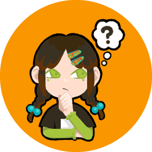

about me
私について

古徳 ちひろ
Kotoku Chihiro
2001年12月03日生まれ
東京都出身


趣味は絵を描くこと、写真を撮ること、そして物事の本質について深く考えること。
絵を描くことやものづくりは幼い頃から好きで、頭の中にある空想の風景を形にしたりと、自分の内側にあるイメージや心に湧き上がる感情を、
具体的な「形」としてアウトプットすることが得意であり、純粋な喜びを感じてきました。
これまで自分自身のために行ってきたこの創作活動を、これからは他者のために役立てたいと強く考えるようになり現在は、 ユーザーの心に寄り添う感性と、課題を的確に解決する論理性を両立できるデザイナーになることを目指し、日々スキルと知識の習得に励んでいます。


skill
私ができること
バナー広告やwebのデザインはもちろん、ロゴや名刺、ポスターの制作もできます。
webのコーディングでは誰が見ても分かりやすいよう心がけています。
イラストが得意なため、足りない要素を自身で描いて制作することも可能です！
like
私の好きなこと
考えること

私にとって、じっくりと考える時間は、
問題と向き合い、より良い結果を生み出すために大切な過程だと感じています。
心理学や哲学、倫理学も好きです！